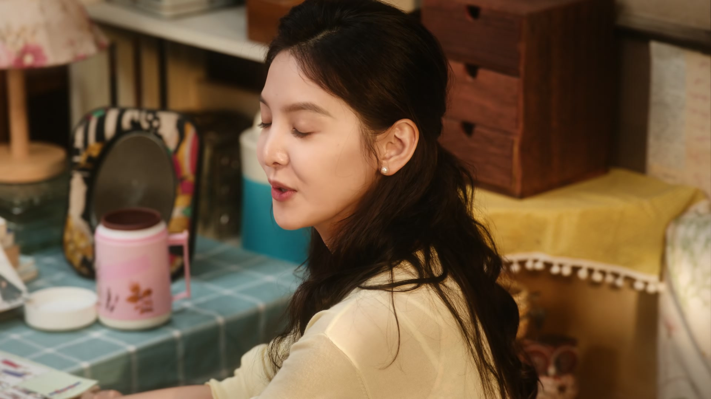
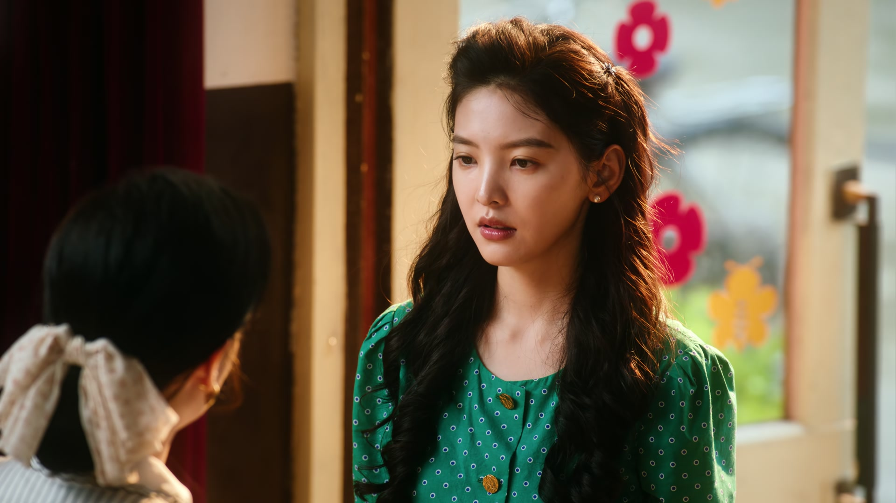
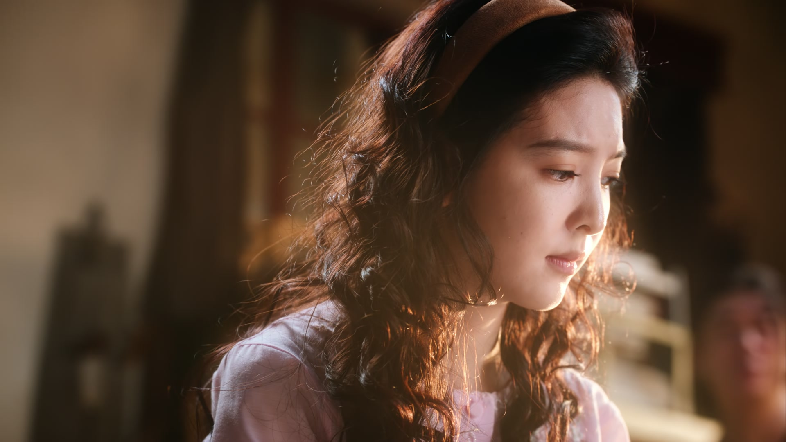
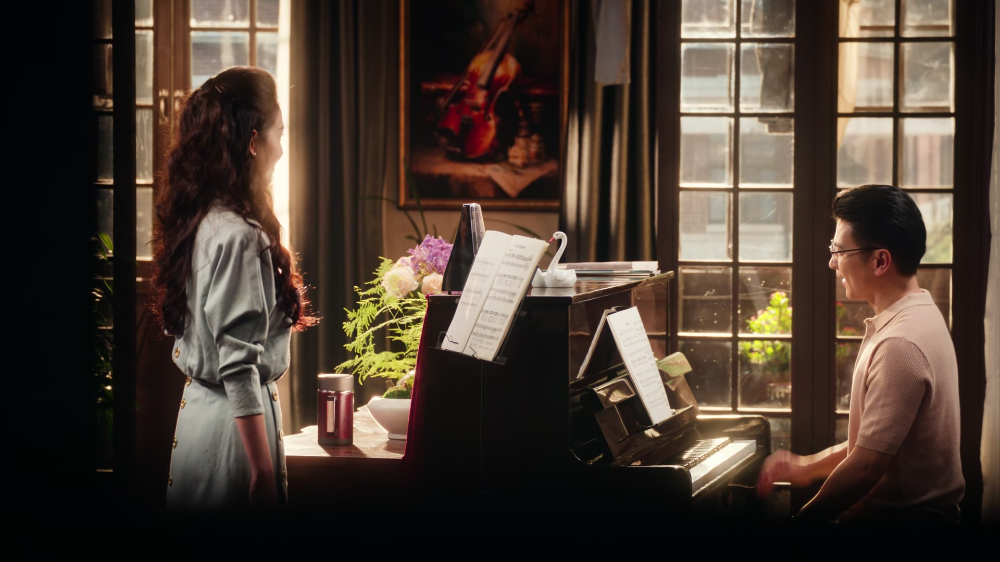
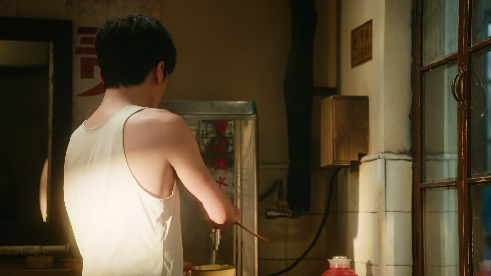
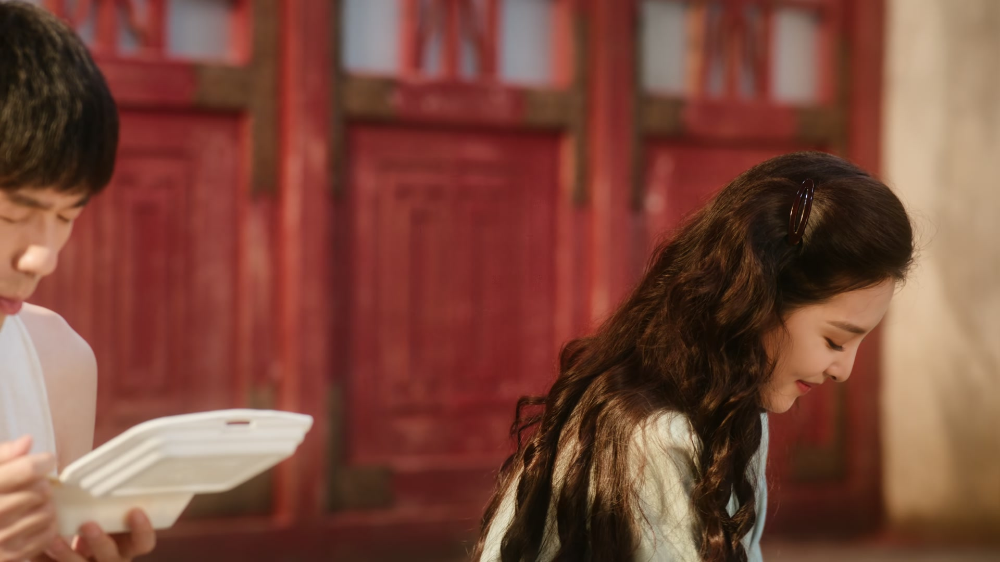
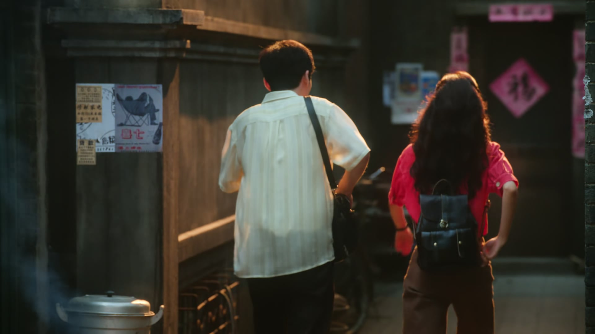

没钱不丢人，瞒着老师才丢人
情境：庄庄如实告诉郑老师学费月底才能交，郑老师一句「钱的事你不用担心」接住了她的难处。
遇到这种情况，可以这样做
- 遇到难处，把话说在前面，比硬撑着强。
- 真正为你好的老师，会先让你安心上课。
- 欠下的学费用心补，别用谎话补。
Drama Recap · 剧情图文总结
第 3 集 · 滚烫的生活
庄庄在郑老师家唱响《大海啊故乡》，学费得以缓交，转头却在培训班因拽了一下孩子被辞退；徐胜利再闯电影厂扑空，又被街头劫匪一棍子闷倒。好在两人靠一碗温泉蛋把日子过了下去——四百块启动资金，冬去春来的第一摊就此开张。
庄庄的声乐课在郑老师家开了张，一首《大海啊故乡》让老师直夸「比之前进步不少」，学费月底再交也有了缓期；可她在培训班的试教，却因拉架拽了孩子一把被辞退。徐胜利拿着剧本再闯电影厂，被吴老师一句「把写作当业余爱好」劝回，回旅馆的路上又挨了一闷棍、被抢走一千五百块。好在被环卫工人捡回的旧包让庄庄找回了证件，两个人用四百块当启动资金，支起了冬去春来的第一个服装摊。
第 3 集，庄庄去郑老师家上声乐课。郑老师问她安顿得怎么样，她只说自己住在胡同里的小旅馆。聊起「想在北京住下来，方便学习」，郑老师点点头：「如果要考乐团、参加比赛，确实需要系统化提升，一周三节吧，学费我给你打个折。」庄庄练完一首《大海啊故乡》，终于开口：钱在火车站被偷了，学费能不能月底再交？郑老师摆手：「钱的事你不用担心，咱们先把课上好。」
剧里的鸡毛蒜皮，往往是人生的缩影。这些情节不只是故事——当你在现实中遇到同样的处境时，它们能提醒你：先做什么、别做什么、怎么说才有效。
情境：庄庄如实告诉郑老师学费月底才能交，郑老师一句「钱的事你不用担心」接住了她的难处。
情境：庄庄拉架拽了孩子一把，被家长和机构认定「跟孩子有肢体接触」，试用期被辞退。
情境：吴老师劝徐胜利把写作当业余爱好，「拿业余爱好挑战别人的饭碗，不是给自己找快乐」。
情境：徐胜利被打抢一千五百块，庄庄认出了火车站偷她钱包的两个人，成了重要线索。
情境：徐胜利卧床消沉，陶亮亮劝庄庄别把他的伤春悲秋当回事，等他好了就全忘了。
情境：「这蛋也没那么好过，好不好取决于你要过滚烫的生活，还是温吞的生活。」庄庄用四百块支起了第一摊。
108 房间里，庄庄和沈冉冉为一件衣服拌起了嘴。庄庄问：「喜欢吗？」冉冉回：「三十一件？抢钱啊。」庄庄怼回去：「也不是我非要住你这屋的，我不来还会有别人来。」冉冉也不示弱：「那你不住不就行了嘛，反正你住在这里，我就很烦。」
庄庄懒得跟她吵：「你这人还挺不讲道理的。」冉冉傲气地一扬头：「我就不讲道理，怎么了？」庄庄问她吃饭了没，冉冉说：「我试镜，我不饿。我这几件衣服倒是挺适合试镜的，另外一件得体点，得卖贵一点，五十一件，一件都卖不出去。」
说着，冉冉又补了一句：「你放心啊，要是有空屋，我肯定搬出去，别让我等老了。」两个人谁也看不上谁，谁也不让谁。
关键台词 · KEY QUOTES
庄庄提着水果上门拜访，一进门就笑：「郑老师好久不见了，您跟师娘身体都好吧？」寒暄几句，庄庄说这次来北京想住下来，方便学习，「之前总是一趟一趟地学，学不踏实」。郑老师点头：「如果要考乐团、参加比赛，确实需要系统化的提升，一周三节吧，学费方面我给你打个折。」
师娘张罗着吃水果：「来到这儿就像来到自己家一样，千万不要客气。」郑老师上起课来，庄庄开口唱《大海啊故乡》：「小时候，妈妈对我讲，大海就是我故乡……」郑老师听完直点头：「非常好，比之前进步不少，我们从头再来一遍。」
练到一半，庄庄鼓起勇气：「老师，我想说我的学费能不能统一在月底交？我的钱在火车站被偷了，我最近在找工作，工资都要月底才能发。」郑老师顿了顿：「那这事你也没跟家里人说？住宿费哪儿来的？」庄庄说挣了一点、朋友也帮忙了。郑老师便不再追问：「钱的事你不用担心，咱们先把课上好。」
关键台词 · KEY QUOTES
陶亮亮在院里拉住沈冉冉：「这不是我明星妹妹吗？你们屋那个人，把你们赶走了吧？」冉冉不耐烦：「我有事情呗。」陶亮亮劝她：「这不能急啊，跟拔钉子似的，你得一点一点拔，你拔快了容易断。」冉冉冷笑：「我刚拔出来，就又缩回去了。」
陶亮亮见她转身要走，忙喊：「前面就是那个门钉肉饼了，没吃呢吧？我请你。」冉冉说：「我谢谢你，但我最近吃不了，我得减肥。」陶亮亮损她：「你就别减肥了，你这瘦得都跟马杆似的。大风一吹，别把你给吹折了。」冉冉回嘴：「我要真瘦成那样，赖在你小旅馆，你伺候我呀？」两人斗着嘴，到底也没吃成这顿饼。
陶亮亮最后撂下一句「这天塌下来呀，也要对得起自己」，冉冉却想起自己的事：「我这次事情不成功，不是我演技不行，是那个导演没有眼光！」陶亮亮呛她：「你还怪上导演了？谁给你的勇气呀？」又补一刀：「搭配很重要啊姑娘，做演员，审美也很重要。先敬罗衣后敬人——跟你说这么多，你也学不会，你回去自己好好琢磨琢磨吧。」
关键台词 · KEY QUOTES

冉冉提着一兜好吃的来找庄庄：「姐，你吃过饭没有？我买了好多好吃的。北京的这个懒龙很好吃的，就是带肉馅的饼，卷起来的，尝尝，可香了，还热着呢。」又递过老北京酸奶。庄庄接过，小声说：「姐，你审美真好，难怪你平时穿的衣服那么好看。」
冉冉笑了：「这穿衣服也是一门学问。我那天去试戏，副导演让我下回穿得好看一点。我爸陪我去大街上逛了一圈，我也买不到什么好看衣服，不知道怎么搭。」庄庄问那试的是什么角色，冉冉说：「就是那种年代感的歌唱女明星，还有都市丽人，特别亮丽的那种。」
冉冉翻出前两天搭好的几身衣服：「你看看有没有喜欢的，你身材那么好，就当给我做模特了。」庄庄一套一套试过去，冉冉在旁边点评：「你穿亮色特别显气色。这搭上这个腰带，还是真不一样。喜欢就拿去穿两天。」庄庄听她口音亲切：「姐，你也是江浙人吧？」冉冉说自己是湖州的，庄庄惊喜：「我是温州人，那我们是老乡呀！」
关键台词 · KEY QUOTES

培训机构里，庄庄教孩子们练口型：「嘴巴张开，坚持住，很好。」两个男孩却打起架来，庄庄赶紧上前拉：「别打架，小心！」她伸手去拽，一个孩子摔了，家长冲进来：「儿子，没事吧？你老师怎么回事啊，怎么扒拉孩子呢！」
庄庄慌忙解释：「我是想让他们分开，我不是打孩子！」可家长根本不听：「你都看见了，你还拽他了。无论如何，我们也不能跟孩子有肢体接触。你不是教过小孩吗？这点道理都不懂。」机构负责人叹口气：「行了，我看你也不适合这份工作。孩子家长不依不饶要退钱，你还是走吧。」
庄庄不肯放弃：「请您再给我一次机会，如果孩子再闹疼，我一定会好好处理的，再有这样的情况，不用您说，我自己走人。」可道歉也换不回信任：「你不用跟我们道歉，道歉也没用，我们肯定是要换老师的。这孩子幸亏是没摔坏，要摔坏了，你们整个培训机构都赔不起。」庄庄红了眼圈，只好收拾东西离开。
关键台词 · KEY QUOTES
徐胜利又蹲在电影厂门口。吴老师下班出来，看见他还等着：「你怎么又来了？汪导来不来我们也不知道，要不你去门口等吧。」下了班，吴老师劝他：「这两天你就别再来了，汪导出差，还不知道什么时候回来。」徐胜利不服气：「他们也不是存心作弄你。每天来找汪导的人多了去了，找个由头来递剧本的人也是很多。」
徐胜利急了：「汪导真的认识我，我们俩真在一块儿工作过，我有合影！而且汪导也真说过，我写得真的很不错。」吴老师摆摆手：「小同志，我信不信不重要，重要的是你自己要明白。作为业余爱好者，你的作品我看了，算着写得不错的。但是你要把写作当饭吃，就难了。像你这样拿自己的业余爱好来挑战别人的饭碗，不是给自己找快乐。」
「我劝你一句，把你的写作热情当成业余爱好，或许啊，能得到真正的快乐。」吴老师说完要走，徐胜利追上去，塞给他一张纸条：「吴老师，这是我在北京的地址和电话。汪导要是回来，或者您对剧本还有什么建议，随时联系我。」他走出大门，身后的门没有再响。
关键台词 · KEY QUOTES
徐胜利回旅馆的路上，被人从背后一闷棍放倒，抢走一千五百块。庄庄冲上去追，一边喊「徐哥，我的钱」——劫匪正是火车站偷她钱包的那伙人。众人一路追到街角，还是让人跑了。
赶来的民警给徐胜利做笔录：「看清楚打你的人了吗？」徐胜利摇头：「他当时从背后给了我一棍子，我眼前一黑，也没看清。差不多有三四个人吧，好像有一个人是抢劫的。」庄庄在旁插话：「警察同志，我觉得是寻仇。有两个人特别像前两天在火车站偷我钱包的人，徐哥你还帮我追来着呢，是不是记仇了？」
民警赞了一句：「挺厉害，小姑娘。这个线索很重要，记下来。」临走又叮嘱老板娘：「这俩是常住的吗？刚来就交了一个月房租？来的都是客，别光顾着收人钱，该照应照应着点。」徐胜利躺回床上，一屋子人围着他叹气。
关键台词 · KEY QUOTES

徐胜利被打后一直昏睡。陶亮亮坐在床边念叨：「睡一天一宿了，还长床上了？还真拿自己当大爷了。他这脑袋跟人干这么一下，干什么呀？谁没挨过揍啊，你快醒醒！」沈冉冉端了药来，被徐胜利一句「不想吃」顶回去：「那你想吃饭吗？」「不想。」「那你想干啥？你说呀。」
陶亮亮想劝徐胜利去医院，沈冉冉拦住：「去什么医院？我这儿是舒服呀。这写剧本的脑子，别让人给打坏了。」陶亮亮逗她：「这都进屋照顾了，把他带走也行。」沈冉冉一瞪眼：「你们很闲吗？你们生活里就没有难过的事情啊？姑娘，活着本身就是一件难过的事情。」
她搬出艺术史给徐胜利打气：「拉斐尔、米开朗基罗、达芬奇，你现在看是三个了不起的艺术家，对吧？但那个时候，就是给雇主打工的而已。柏拉图也说过，痛苦就是滋养艺术最好的土壤。」陶亮亮插嘴要给她讲「巴赫的幽默」，沈冉冉挥挥手把他轰走：「疗愈心灵，还得靠我。」
关键台词 · KEY QUOTES

庄庄被辞退的事，陶亮亮很快就知道了，见她反而轻松，忍不住劝：「被开除了还这么高兴？那你有没有找新活？」庄庄说正要去试试，陶亮亮给她竖起大拇指：「这心态，得跟你学习。」又叮嘱：「你跟徐哥说他还没好利索，先别出去了。」
庄庄夸他：「程老师，你是好人，他呢，也是个好人。」陶亮亮却跟她啰嗦几句：「这有的时候啊，不能把男人的脆弱太当回事。他现在满脑子都是他那点伤春悲秋，等他好了，全忘了，那多好呀。」
郑老师的声乐课上，庄庄又一次练完，郑老师夸「今天这回课质量很高」。庄庄试探着问：「老师，您那边有没有需要找录音伴唱，或者声乐助教的呀？」郑老师明白了她的心思：「你是想着既然出来了，就多做些事情，给家里减轻一些负担，我能理解。不过你要知道，你和那些音乐学院的孩子不一样。现在是你备赛艺考最关键的时刻，特别要注意嗓子的保护。如果你再出去唱歌、工作，我会很担心。」庄庄低下头：「我知道了，郑老师。」
关键台词 · KEY QUOTES

庄庄在学校门口看到「勤工俭学」的摊位，上去打听：「同学，这个怎么报名呀？」对方递过报名表：「填写姓名、班级和学号，后面我们会组织培训的。」庄庄犯了难：「我不是这个学校的。」对方想了想：「那这样吧，我给你个街道管理处的电话，你先问问。」庄庄道了谢，把电话记下来。
院子里，陶亮亮和徐胜利坐在台阶上，就着一锅还没开的水闲聊。陶亮亮问他：「没去电影厂看看，搞创作吗？」徐胜利自嘲：「那得稳扎稳打，来日方长。」陶亮亮逗他：「下个月房租有着落吗？我看你这状态，一天一顿，连个蛋都不敢加。」徐胜利不服气：「我把剧本都发给几个电影厂了，我还能写点文章，发给编辑部、杂志、报社——这都是钱。」
陶亮亮正色道：「我的意思呀，是咱远的近的都得想。往远了看，往前看；往近了说，咱也得吃饭呀。咱先留下来，再聊以后。」徐胜利点点头，把这句话记在了心里。
关键台词 · KEY QUOTES

张警官在路上叫住庄庄：「看看，这是你丢的包吗？」庄庄又惊又喜：「神探哪！人抓到了吗？」张警官摇头：「人还没抓着呢，一个环卫工人找到的。里边有你的证件，还有几张照片，现金肯定是没了。」庄庄签字领包，连声道谢。张警官临走说了句：「在北京啊，有困难，找民警。」
旅馆里，徐胜利蹲在炉子边煮鸡蛋。庄庄凑过来：「这不开火能行吗？」徐胜利卖弄起来：「这个叫温泉蛋，用六十度到八十度的水就够了。泡出来的蛋，蛋清稍微凝固一点，蛋黄还是流动的，放点酱油可好吃了。」庄庄笑他：「我以为边泡温泉边吃蛋，那叫温泉蛋啊。」
庄庄把找回来的钱分成两份递过去，徐胜利只肯收一点：「用不了这么多，剩下的算是我借给你的。」又补一句「我每天都投稿，稿费过两天就回来了」「我没有那么好心，我是要算利息的」。庄庄看着他，忽然认真起来：「这蛋也没那么好过，好不好取决于，你要过滚烫的生活，还是温吞的生活。」徐胜利被她这句话击中，念叨着要记下来：「滚烫的生活……滚烫的生活。」
关键台词 · KEY QUOTES

庄庄向徐胜利交了底：「我发现一个学校附近能摆摊卖衣服的地方，一天摊位费小几十块钱。我把剩下的钱全部拿来进货，然后每一件加价三到五块钱，我就有得赚。」徐胜利担心摊位抢手：「那么多摊位，咱们能挣钱吗？」庄庄说：「那也得试一试啊。我这钱能找回来，算是意外之喜了。我把这四百块钱当作启动资金，我很有信心。」
两人上街摆摊。庄庄指着一家店的镜子：「大姐，借下您的镜子用用。」徐胜利把领子翻好、扣子扣上、衣服塞进裤腰：「今天这件衣服能卖多少钱，就看你表现了。」他往摊位前一站——别人用假人模特，他用真人大活人。庄庄笑他「想得美」，却忍不住夸：「东西在精不在多，我搭配好挂上，咱不比人家差。」
开张头一天，庄庄想起该跟附近的摊主打打招呼：「这样以后也有个照应。」徐胜利说「我怎么没想到呢」，又让她买几瓶水送过去。旁边的温州大姐认出了庄庄：「我孩子在这儿的音乐学院上学，我是来陪读的。咱们温州人出来做服装生意多团结，你以后要是有什么事，跟姐说。」庄庄看着天色，低头记账——四百块的本钱，冬去春来的第一摊，正式开张了。
关键台词 · KEY QUOTES
再闯电影厂被吴老师劝「把写作当业余爱好」，回旅馆路上挨了一闷棍、被抢走一千五百块；病床上不忘「稿费过两天就回来」。
声乐课在郑老师家开了张，培训班的试教却因拉架被辞退；找回失而复得的包，用四百块当启动资金，支起了服装摊。
给庄庄送吃的、教她搭配衣服，认下温州老乡；徐胜利病倒时搬出拉斐尔、达芬奇给他打气，嘴硬心软。
一边损沈冉冉「瘦得跟马杆似的」，一边劝庄庄别把男人的脆弱当回事，操心着徐胜利的房租。
夸庄庄「比之前进步不少」，主动给她学费打折，叮嘱她备赛期间保护好嗓子，是庄庄在北京的贵人。
劝徐胜利「把写作当业余爱好」，却收下了他的地址电话——冷面背后留了一线。
这一集退到背景里，只在小松被念叨「不卫生」时护上一句「她是我儿子」。
为徐胜利做被打笔录，记下庄庄提供的「火车站旧贼」线索，又把找回的包送到庄庄手里。
给庄庄留下「有困难跟姐说」的话，也是后面摆摊生意里照应她的同乡。
庄庄在郑老师家唱响第一支歌，学费有了缓期，底气长了一分。
徐胜利街头被抢，庄庄认出火车站的老熟人——恶人自有恶人磨的伏笔就此埋下。
「你要过滚烫的生活，还是温吞的生活」——这一集最好的台词，被徐胜利念叨着要记下来。
从被辞退的培训班老师，到服装摊的小老板，庄庄越挫越勇，说干就干。
湖州的冉冉和温州的庄庄，一件亮色上衣，把两个人的心拉近。
徐胜利始终没等到汪导，可他把地址电话留了下来——转机也许就在电话那头。
庄庄认出了火车站的小偷，张警官记住了这条线索，案子会不会再串起来？
「现在是备赛最关键的时刻」——庄庄离歌舞团的门，还有多远？
「咱们温州人做生意多团结」——服装店大姐的一句承诺，为后面摆摊的起落埋下线。